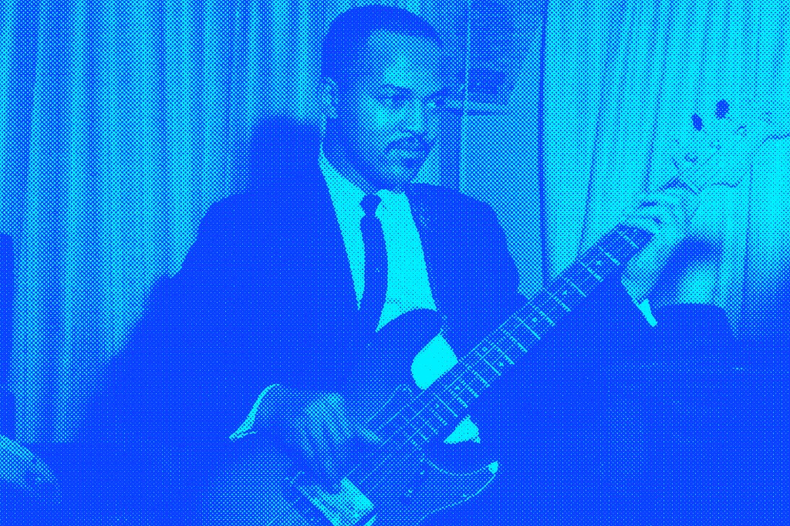
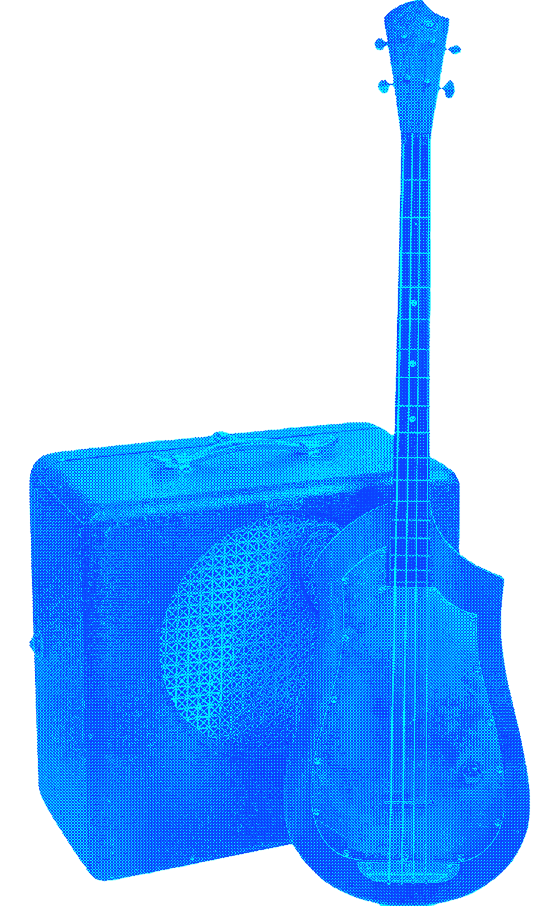
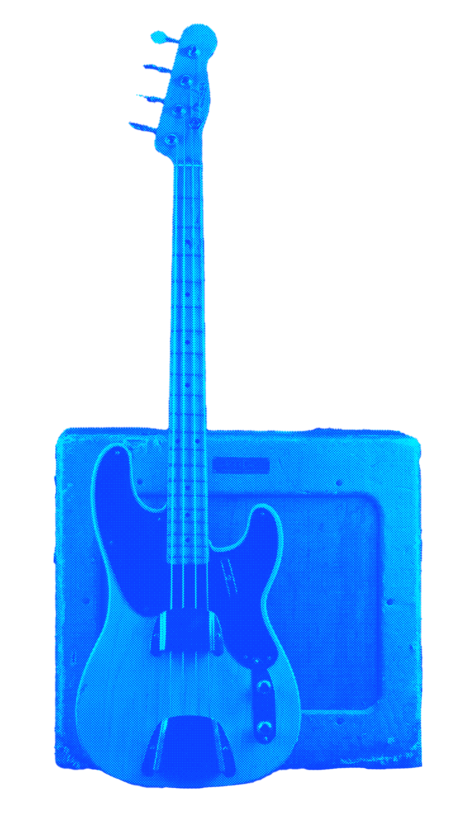
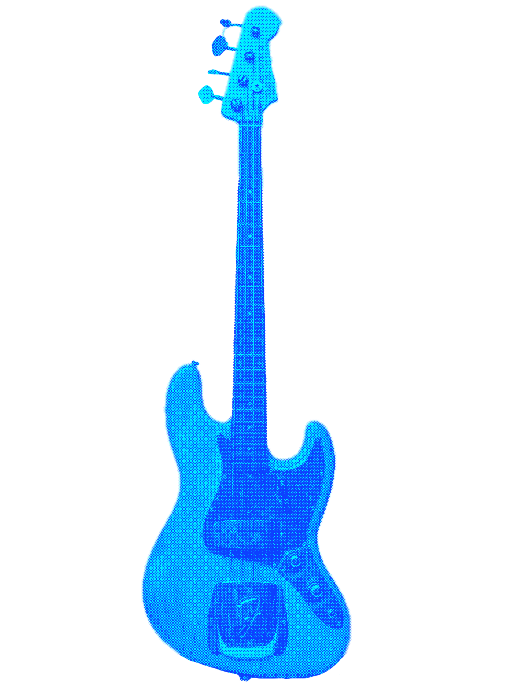
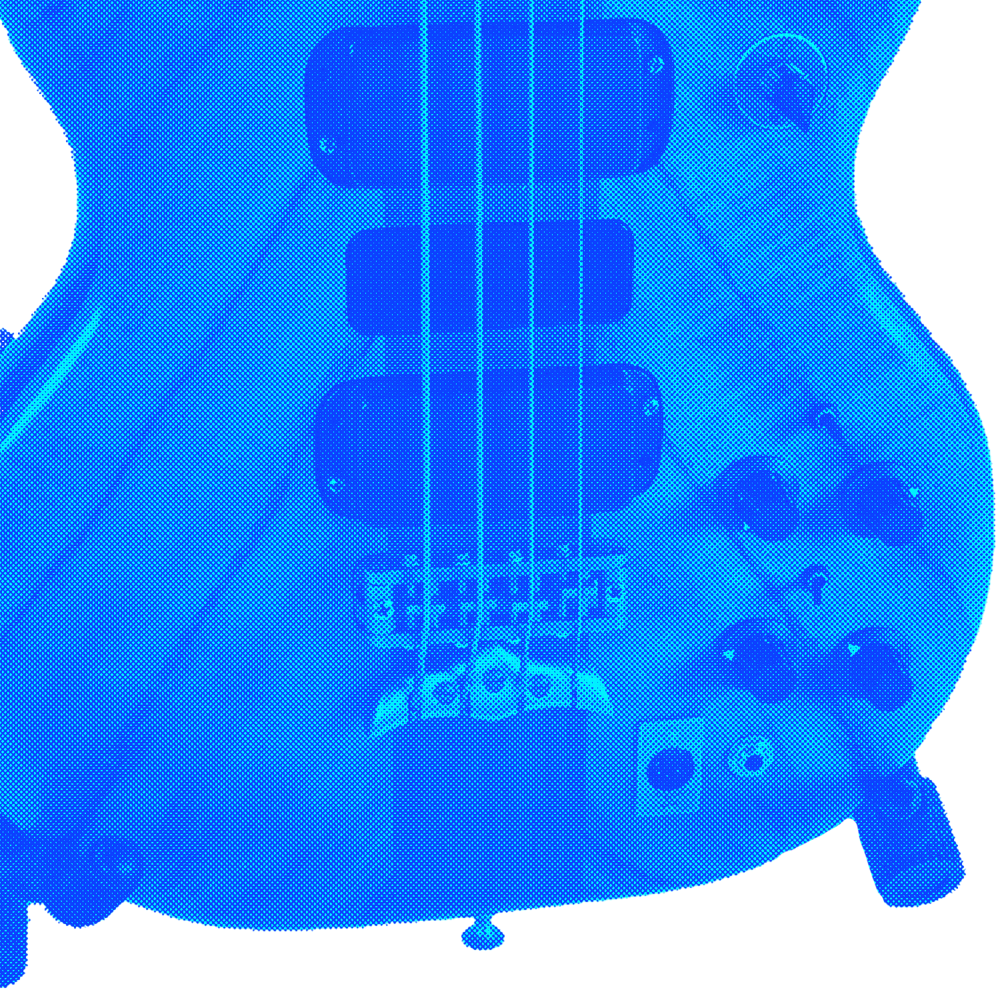
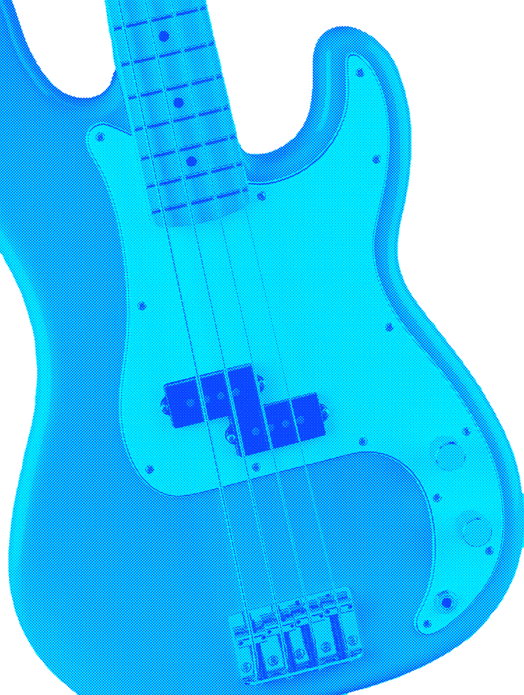

1900s — Upright tradition
Used in orchestras and early jazz. Large, acoustic, and difficult to transport.

James Jamerson January 1936-August 1983
The electric bass stepped out from the bulky upright—not as a luxury, but as a response to cramped stages, louder ensembles, and the sheer need for a low end musicians could amplify without losing character. Makers and players had chased electrified uprights long before mass production standardized the form—but it was approachable, repeatable design that pushed the solid-body bass into every genre.
Leo Fender's blueprint from the early 1950s gave rhythm sections a clear, stage-ready anchor: amplified low-end that stayed present in loud rooms yet felt precise under the fingers—and that practical foundation still supports rock, funk, jazz, soul, country, hip-hop, and whatever line you write next.
Used in orchestras and early jazz. Large, acoustic, and difficult to transport.
Experimenting with electrified bass instruments. Paul Tutmarc invented the Audiovox Model 736.

First mass produced electric bass (the P-Bass). Quickly adopted in rock, country, and early pop.

Fender released Jazz Bass. Bass became essential across all music genres.

Powered pickups and active electronics. Musicians creating new techniques.

Integrating technology. Vast communities. New bass models.
